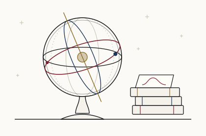

HEP@IITK
Research
The group's work spans three overlapping subgroups. Collaboration across them — theory feeding searches, experiment sharpening models — is actively encouraged.

Particle Theory
We build and test extensions of the Standard Model with effective field theory, and follow them into the early universe: phase transitions and the gravitational waves they leave, dark matter, axions and inflation. We also map the inner structure of the proton with light-front QCD. Much of this work sits where theory meets data: which models survive precision measurements at the LHC and in flavour physics, and what signals they would leave in gravitational-wave detectors, supernovae and the sky.
- Beyond the Standard Model
- Effective field theory
- Phase transitions & gravitational waves
- Dark matter & cosmology
- Axions
- Proton structure (light-front QCD)
- Inflation & compact objects
- Flavour & neutrino physics
- Collider phenomenology
Faculty in this area
- Dipankar
- Debtosh
- Joydeep
- Kaushik
- Sabyasachi
Particle Experiments
We search for new particles and dark matter with the CMS experiment at the LHC, study neutrinos with ANNIE and DUNE, and build detectors in our own lab. Machine learning runs through all of it, from reconstructing and tagging events to explaining what the networks have learned. We also work on the trigger, particle-flow reconstruction and data scouting in CMS, look ahead to the HL-LHC and a future 100 TeV collider, and use a scintillator telescope in the lab to measure cosmic-ray muons.
- Dark matter & new-particle searches
- Machine learning & explainable AI
- Jet substructure & tagging
- Neutrino oscillations (DUNE)
- Neutrino interactions (ANNIE)
- Long-lived particles
- Higgs measurements at the LHC
- Trigger, reconstruction & data scouting (CMS)
- Future colliders: HL-LHC & FCC-hh
- Detectors & cosmic-ray measurements
Faculty in this area
- Navaneeth
- Swagata
- Sanmay
String Theory
We study quantum gravity and strongly coupled quantum systems: holography, black holes and their horizons, entanglement and islands, and Carrollian physics with tensionless strings. The conformal bootstrap and periodically driven systems link this work to statistical and condensed-matter physics. Recent work ranges from the scattering of null strings and holography in flat space to islands in braneworlds, Floquet conformal field theories, and stars torn apart by black holes and wormholes.
- Tensionless (null) strings
- Holography & AdS/CFT
- Black holes & horizons
- Entanglement & islands
- Carrollian holography
- Conformal bootstrap
- Floquet & non-equilibrium dynamics
- Quantum chaos & thermalisation
- Tidal disruption & wormholes
Collaborating across subgroups
Several projects sit deliberately between the subgroups — effective field theory matched to LHC measurements, dark sector models tested against intensity-frontier data, machine learning methods shared between lattice and collider work. Prospective students and postdocs are encouraged to talk to more than one faculty member.